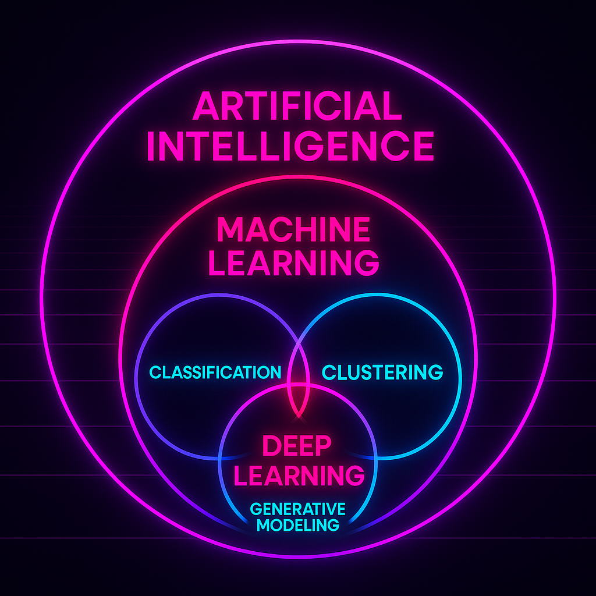
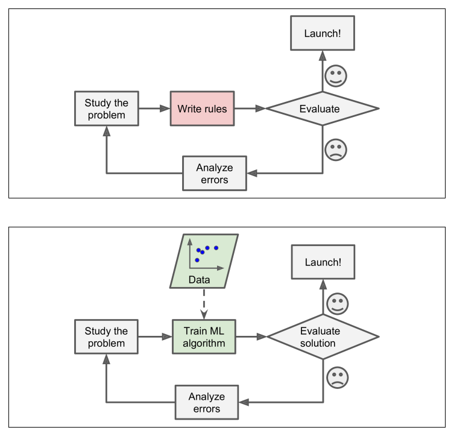
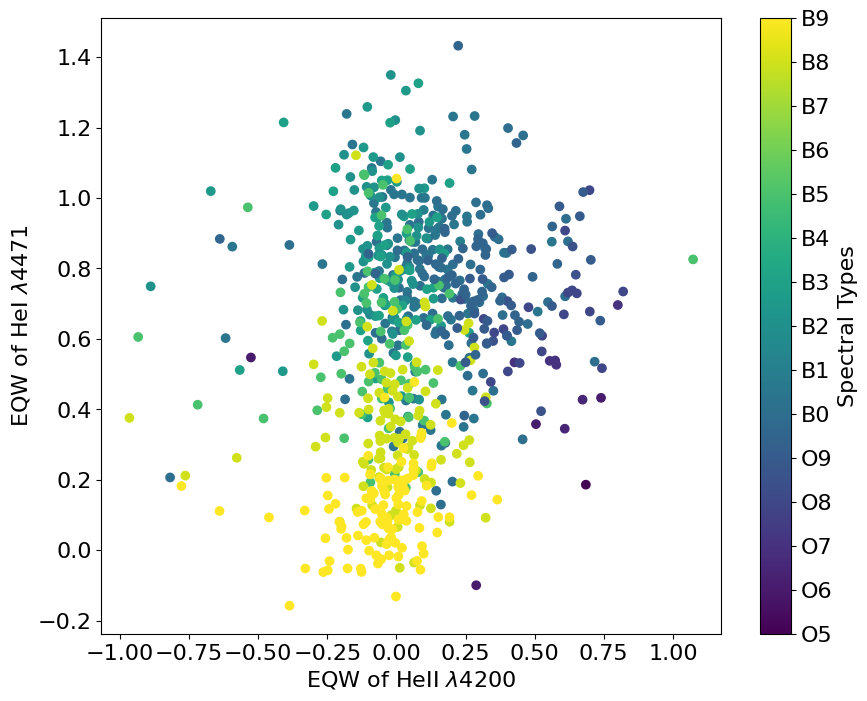
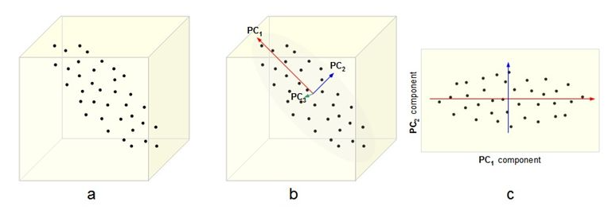
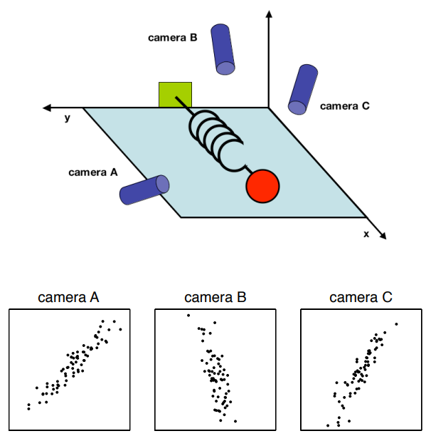
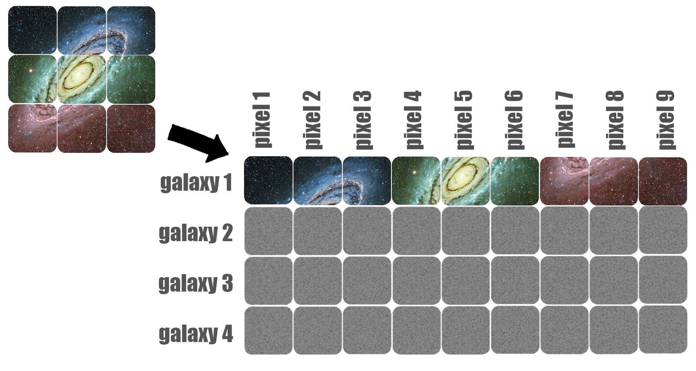
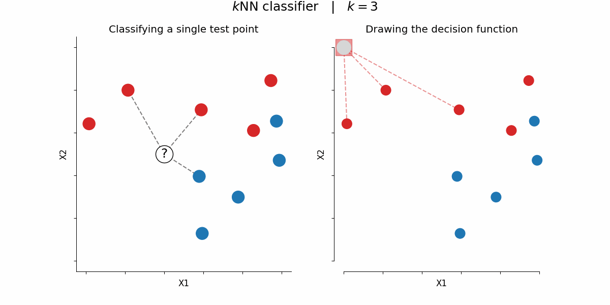
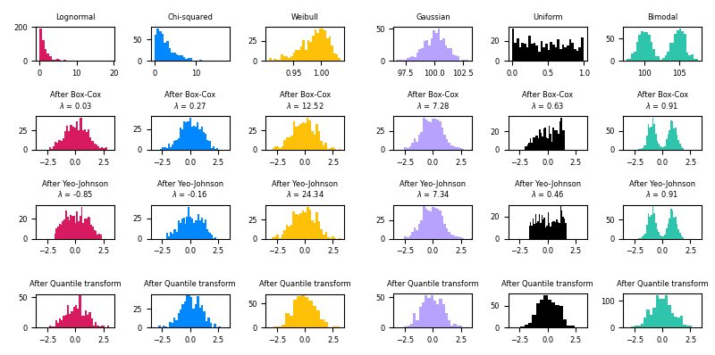
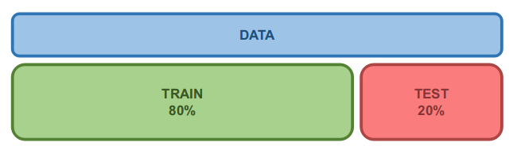
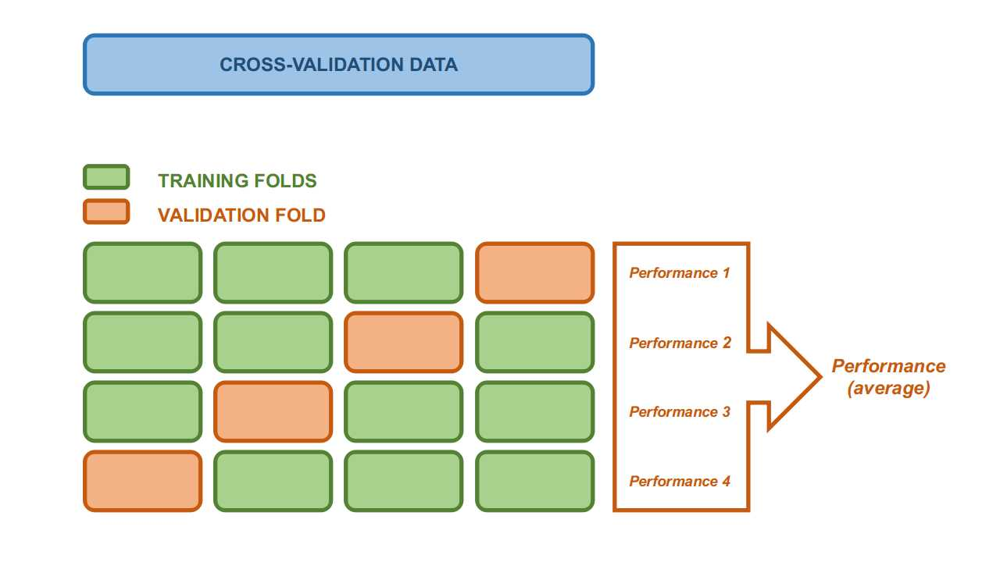

Machine Learning Practices and Protocols#
or: “How I Learned to Stop Worrying and Love the Black Box”
In this session we will focus on the fundamentals of the Machine Learning (ML) approach. We will:
formalize some concepts encountered in previous lectures
outline procedural protocols
highlight good practises and common mistakes
\(\rightarrow\) The target is to understand how to operate “the black box” and make it transparent (to us, not the referee :p).
Setup#
!pip install wget --quiet
import numpy as np
import pandas as pd
import matplotlib.pyplot as plt
import seaborn as sns
from IPython.display import display, HTML
display(HTML("<style>.container { width:100% !important; }</style>"))
import requests
url = "https://raw.githubusercontent.com/AstroStat-Academy/assets-public/main/colab/clone_and_cd_colab.py"
colab = requests.get(url).text
exec(colab)
url = "https://raw.githubusercontent.com/AstroStat-Academy/assets-public/main/styles/plot_style.py"
style = requests.get(url).text
exec(style)
The Black Box problem#
One step back \(-\) what is Machine Learning?
A branch of Artificial Intelligence (AI) which regards algorithms that can improve their performance through experience and data.
{kind=link}

|
Figure 1. The ML landscape. |
ML can be best understood when compared to the traditional approach:
{kind=link}

|
Figure 2. The traditional approach (top) compared to the ML one (bottom). (From Gerone, A. "Hands-on Machine Learning with Scikit-Learn, Keras and TensorFlow") |
Differently from the hard-coded approaches followed by traditional modelling, ML proposes a train-application scheme.
The idea is that:
a machine (a computer) can learn the parameters of an arbitrarily complex model by training over some input data
the “Analyze errors” task is performed by the machine itself
once the model is trained, the machine can predict the response for previously unseen data.
Hence, the Black Box problem arises:
“We will always get an output, but … is that correct?”
\(\rightarrow\) In order to evaluate our “box” we need to have:
complete control over inputs and outputs
a solid assessement protocol
This brings us to …
Basic ingredients for a successful ML model#
Metrics of performance (previous notebooks)
“Wait \(-\) is this a bug or a feature?”
Know your data
“garbage in, garbage out”
~literally any wannabe data analyst on youtubeProtocols: training, validation, and test sets
“Divide [train de probatio] et impera”
Data Pre-processing#
Data visualization#
When possible, let’s see the data (or at least their statistical properties).
We will generate and observe some mock data with sklearn.datasets.make_classification:
very useful tool to quickly test your algos!
can set properties as the number of samples and features, of the informative and redundant features, etc.
from sklearn.datasets import make_classification
from prettytable import PrettyTable
import numpy as np
import pandas as pd
X, y = make_classification(n_samples=100, n_features=3, n_informative=1,
n_redundant=1, n_repeated=0, n_classes=2,
n_clusters_per_class=1, weights=None, flip_y=0.01,
class_sep=1.0, hypercube=True, shift=0.0, scale=1.0,
shuffle=True, random_state=42)
table = PrettyTable()
table.title = str('Data shape')
table.field_names = ['X', 'y']
table.add_row([np.shape(X), np.shape(y)])
print(table)
feature_names = ["X"+str(i) for i in range(np.shape(X)[1])]
# Converting data to dataframe:
df_data = pd.DataFrame(data=np.append(X, y[:,None],1), columns=feature_names+['y'])
# Displaying first 5 rows:
display(df_data.head(10))
Quick visualization: corner plot with seaborn#
Seaborn is a powerful tool for quick visualizations.
Deals automatically with plot limits etc.
Wide range of pre-set visualizations: corner plots, violin plots, etc.
Needs
pandas.DataFramesas inputs
# Corner plot:
sns.pairplot(df_data, hue="y")
plt.show()
In this image, which features are:
redundant?
informative?
[Spoiler]
We just need X\(_{1}\) or X\(_{2}\) for the classification of these data!
Sounds familiar?
We have already seen a similar case in the application of the Clustering algorithm. We used two features that could separate (not optimally though…) the sources between the different OB classes of hot stars.
{kind=link}

Exploring feature redundancy with covariance matrix#
The covariance is defined as:
This is for 2 features \(-\) when we have \(d\) features:
… the covariance matrix can be written as:
# Calculate the covariance matrix:
cov_matrix = np.cov(df_data, rowvar=False)
# Plot the covariance matrix:
plt.figure(figsize=(5, 3))
plt.imshow(cov_matrix, interpolation='nearest', origin='lower', cmap='magma')
plt.title('Covariance Matrix', fontsize=10)
plt.colorbar()
plt.xticks(range(df_data.shape[1]), df_data.columns)
plt.yticks(range(df_data.shape[1]), df_data.columns)
plt.show()
\(\rightarrow\) Notice how X1 and X2 are co-varing !
Take-home points
Only explains linear dependecies
Diagonal matrix \(\leftrightarrow\) [linearly-] independent features
Visualizing high-dimensional data#
As you can imagine, visualizing multidimensonal data / feature selection becomes quickly untractable as the number of features grows.
How can we get a hint of, e.g. outliers and source clustering?
We can use tools that “summarize” the features into a lower-dimensional space (embedding)
\(\rightarrow\) e.g., reduce to 2D or 3D, to directly visualize the data.
These techniques belong to the category of “Dimensionality Reduction”.
Dimensionality Reduction with PCA#
\(\hspace{1.3cm}\) (a.k.a. Principal Component Analysis)
Let’s build an “easy” dataset with lots of features …
from sklearn.datasets import make_classification
from prettytable import PrettyTable
import numpy as np
import pandas as pd
X, y = make_classification(n_samples=500, n_features=1000, n_informative=900,
n_redundant=100, n_repeated=0, n_classes=5,
n_clusters_per_class=1, weights=None, flip_y=0.01,
class_sep=3.5, hypercube=True, shift=0.0, scale=1.0,
shuffle=True, random_state=42)
# NOTE: <class_sep> sets how far apart are the clusters: larger values produce
# easier sets, in the sense that they are more easily separable.
classes = np.unique(y)
print('There are %s classes' % len(classes))
table = PrettyTable()
table.title = str('Data shape')
table.field_names = ['X', 'y']
table.add_row([np.shape(X), np.shape(y)])
print(table)
feature_names = ["X"+str(i) for i in range(np.shape(X)[1])]
# Converting data to dataframe:
df_data = pd.DataFrame(data=np.append(X, y[:,None],1), columns=feature_names+['y'])
# Displaying first 5 rows:
display(df_data.head(5))
What is PCA?
Principal Component Analysis (PCA) is an unsupervised method which finds the directions (Principal Components; PCs) which maximize the variance of the data.
{kind=link}

|
Figure 3. Detection of Principal Components ($b$) and reduction of dimensionality from 3D to 2D ($c$). (From here) |
Algorithm
The algorithm essentially works by finding a linear transformation which diagonalizes at the covariance matrix:
{kind=link}
\(\rightarrow\) this automatically yields the Principal Components
NOTE: It turns out that the covariance matrix eigenvalues and eigenvectors represent:
eigenvectors \(\leftrightarrow\) unit array giving the direction of the PC
eigenvalues \(~\leftrightarrow\) lenght of the PC vector == explained variance along that PC
\(\triangleright\) Consult Shlens, 2014 for the derivation of the PCs.
IMPORTANT: We must first normalize the features or else the ones with the largest dynamic range will dominate (i.e., artificially display the largest variace)!
from sklearn.preprocessing import StandardScaler
X_n = StandardScaler().fit_transform(X)
Good, now we can apply the PCA decomposition:
%%time
# ^This is here to show how fast PCA is!
from sklearn.decomposition import PCA
pca = PCA()
embedding = pca.fit(X_n).transform(X_n)
'''
NOTE: The "embedding" is the new feature matrix, i.e. the original features
once projected on the orthogonal base composed by the PCs.
''';
table = PrettyTable()
table.title = str('Embedding shape')
table.field_names = ['Dimensions']
table.add_row([np.shape(embedding)])
print(table)
NOTE 1: The embedding has dimensions of:
(n_samples, n_PCs)
BUT: You cannot have more PCs than original features or samples (see e.g. Shlens, 2014):
n_PCs == min(n_samples, n_features)
Let’s display the first 2 dimensions of our embedding:
from matplotlib import pyplot as plt
from sklearn import preprocessing
def plot_pca(pca, embedding, y=None, PC_idxs=[0, 1], xlims=[], ylims=[]):
'''
Plots the first 2 Principal Components (PCs) projections, along with PC
importance.
Parameters
----------
pca : sklearn.decomposition.PCA
A trained PCA object.
embedding : np.array
The data embeddings.
y : np.array (optional)
The embedding labels.
PCs_n : list (optional)
The indexes of the two PCs to be plotted.
'''
fontsize_first = 16
fontsize_second = 12
if y is None: y = np.zeros(len(embedding))
# Checking whether we are using linear PCA, to plot explained variance:
if 'kernel' in pca.__dict__.keys():
kernel = pca.kernel
else:
kernel = None
# Encoding labels in case they are categorical:
le = preprocessing.LabelEncoder()
y_e = le.fit_transform(y.ravel()).flatten()
classes = le.classes_
fig, axes = plt.subplots(1, 2, figsize=(14,5))
axes[0].set_title('Data embedded via PCA', fontsize=fontsize_first)
axes[0].set_xlabel('PC'+str(PC_idxs[0]+1), fontsize=fontsize_second)
axes[0].set_ylabel('PC'+str(PC_idxs[1]+1), fontsize=fontsize_second)
img = axes[0].scatter(embedding[:, PC_idxs[0]], embedding[:, PC_idxs[1]],
s=20, c=y_e, cmap='tab20b', alpha=0.8)
cbar = plt.colorbar(img, boundaries=np.arange(len(classes)+1)-0.5, ax=axes[0])
cbar.set_ticks(np.arange(len(classes)))
cbar.set_ticklabels(classes)
if xlims: axes[0].set_xlim(xlims)
if ylims: axes[0].set_ylim(ylims)
if kernel is not None:
axes[1].axis('off')
else:
ax2 = axes[1].twinx()
axes[1].set_title('PC importance', fontsize=fontsize_first)
axes[1].set_xlabel('PC index', fontsize=fontsize_second)
axes[1].set_ylabel('Explained variance [%]', fontsize=fontsize_second)
ax2.set_ylabel('Explained variance (cumulative) [%]', fontsize=fontsize_second, color='crimson')
axes[1].bar(np.arange(len(pca.explained_variance_ratio_)), pca.explained_variance_ratio_*100, edgecolor='C0', width=0.8)
ax2.plot(np.cumsum(pca.explained_variance_ratio_)*100, color='crimson')
plt.show()
And here is how our 100-dimensional data look like when embedded in 2D:
plot_pca(pca, embedding, y=y)
The beauty is \(-\) the PCs are sorted by importance!
We can look at the Explained variance and decide how many components to keep!
E.g. the first k components that together explain 50% of the variance
IMPORTANT: We didn’t use the labels to perform PCA \(-\) those were added later, just for the visualization!
Physical intuition
Imagine you have a system which has an intrinsical direction of movement:
{kind=link}

|
Figure 4. A poorly-chosen set of features which could benefit from PCA to find the underlying direction of motion. (From here) |
The X, Y, and Z variables are correlated by the motion along the spring axis.
\(\rightarrow\) PCA might help us bypass the issue!
Exercise 1: Run your own PCA
Objective: Let’s assume we want to have a snapshot of our data, see if the data clusters in any way.
Dataset: We will use a dataset of galaxy images, the Galaxy10 DECals Dataset, nicely packaged into a dataframe.
Data type: images (21785 images)
Classes
├── Class 0 (3461 images): Disk, Face-on, No Spiral
├── Class 1 (6997 images): Smooth, Completely round
├── Class 2 (6292 images): Smooth, in-between round
├── Class 3 (394 images): Smooth, Cigar shaped
├── Class 4 (1534 images): Disk, Edge-on, Rounded Bulge
├── Class 5 (17 images): Disk, Edge-on, Boxy Bulge
├── Class 6 (589 images): Disk, Edge-on, No Bulge
├── Class 7 (1121 images): Disk, Face-on, Tight Spiral
├── Class 8 (906 images): Disk, Face-on, Medium Spiral
└── Class 9 (519 images): Disk, Face-on, Loose Spiral
Task: You will have to apply PCA to the dataset, project into the first two PCs, and identify the clusters (by eye).
%%time
import os, ssl, wget, threading, time;
from IPython.display import display, clear_output
from pathlib import Path
script_path = str(Path().absolute())
print('Current path: %s\n\n' % script_path)
path_data = script_path + '/data'
os.makedirs(path_data, exist_ok=True)
# Downloading if dataset not found:
if not os.path.isfile(path_data+"/Galaxy10.h5"):
ssl._create_default_https_context = ssl._create_unverified_context
stop = False
def spinner():
i = 0; chars = "⠁⠂⠄⡀⢀⠠⠐⠈"
while not stop:
clear_output(wait=True); print(f"Downloading ~200 MB data [might take a few mins ...] {chars[i % len(chars)]}"); i += 1; time.sleep(0.1)
threading.Thread(target=spinner).start()
_ = wget.download("http://astro.utoronto.ca/~bovy/Galaxy10/Galaxy10.h5", out=path_data)
stop = True; time.sleep(0.5); clear_output(); print('Done!\n\n')
# Loading catalogue:
import h5py
import numpy as np
import pandas as pd
from prettytable import PrettyTable
with h5py.File(path_data+"/Galaxy10.h5", "r") as F:
images = F["images"][:]
labels = F["ans"][:]
# Dropping class 5, which only has 17 galaxies:
idxs_valid = np.where(labels != 5)[0]
images = images[idxs_valid]
labels = labels[idxs_valid]
# In case we wanted to keep only 1 color:
#images = images[:,:,:,0]
#images = images[..., np.newaxis]
classes = sorted(np.unique(labels))
print('There are %s classes' % len(classes))
print('Image array shape: %s\n' % str(np.shape(images)))
# Displaying one image for each class:
from matplotlib import pyplot as plt
fig, axes = plt.subplots(1, len(classes), figsize=(14, 5))
plt.suptitle('Galaxy class examples', y=0.7, fontsize=14)
for i, class_ in enumerate(classes):
idx = np.where(labels == class_)[0][0]
# index of first galaxy in the list, for class <classs>
ax = axes[i]
ax.set_title('Class: %s' % class_)
ax.imshow(images[idx])
plt.setp(ax, xticks=[], yticks=[])
plt.show()
# Grabbing image properties:
n_y, n_x, n_colors = np.shape(images)[1], np.shape(images)[2], np.shape(images)[3]
# NOTE: Image dimensions are always transposed, when represented as matrices!
print('Original shape of the images: (n_x = %s, n_y = %s, n_colors = %s)\n\n' %\
(n_x, n_y, n_colors))
Let’s “flatten” the dataset, so we can use it in sklearn:
1 row == 1 image
1 pixel == 1 feature
{kind=link}

|
Figure 5. Re-arrangement of pixels into features to "flatten" an image. |
%%time
# Flattening images to 1D arrays (and casting to float):
X_ = images.reshape([len(images), np.shape(images)[1]*np.shape(images)[2]*np.shape(images)[3]])
X_ = X_.astype(np.float32)
# TRICK: These are RGB images (integer values 0--255): we can convert to a
# low-encoding float (32 instead of e.g. 64 bits) without losing information.
feature_names = ["pixel"+str(i) for i in range(np.shape(X_)[1])]
# Converting data to dataframe:
df_data_orig = pd.DataFrame(data=np.append(X_, labels[:,None],1), columns=feature_names+['y'])
# Balancing classes using pandas:
#
# For each class, keeping as many objects as for the class with min number
# of objects ...
min_size = df_data_orig['y'].value_counts().min()
df_data = pd.concat(
[group.sample(min_size) for _, group in df_data_orig.groupby('y')],
ignore_index=True
)
# Re-extracting the matrices after rebalancing ...
X = df_data[feature_names].values
y = df_data['y'].values
# Normalizing the total flux of each image to 1:
# (to prioritize morphological differences over luminosity differences)
#X = X / X.sum(axis=1, keepdims=1)
print('Each class contains ~%s galaxies' % int(round(len(y)/len(classes))))
# Keeping only a [random] subset of the data to speed up calculations:
n_samples_keep = 1000 # max: len(X)
idxs_keep = np.random.randint(len(X), size=n_samples_keep)
X = X[idxs_keep]
y = y[idxs_keep]
# Displaying first 5 rows:
display(df_data.head(5))
table = PrettyTable()
table.title = str('Data shape')
table.field_names = ['X', 'y']
table.add_row([np.shape(X), np.shape(y)])
print(table)
Now the data are ready for PCA decomposition!
NOTE: X are the data you have to run PCA on, y only contains the labels!
Hint: In summary, you have to:
normalize the data
run the PCA algorithm
plot the projections
Nobody can stop you from copy-pasting the code from above, *wink *wink
# write your code here...
[Solution below]
%%time
from sklearn.preprocessing import StandardScaler
X_n = StandardScaler().fit_transform(X)
from sklearn.decomposition import PCA
pca = PCA()
embedding = pca.fit(X_n).transform(X_n)
plot_pca(pca, embedding, y=y)
Mh, not a perfect class separation. If only it existed a non-linear PCA …
[End of solution]
Kernel PCA#
PCA can use the kernel trick (just like in SVM)
\(\rightarrow\) Kernelization applies non-linear transformations to the data, then performs PCA in the transformed space.
How? \(-\) Intuition
The covariance matrix contains the cross-multiplications of the data vectors between themselves (dot products):
Now, you can imagine that if use a trasformation \(\Phi(.)\) to trasform the data to a new “feature space”:
… in such feature space the covariance matrix will be composed of dot products of the type:
where \(i\), \(j\) are feature vectors corresponding to different samples.
The kernel trick allows us to express this in terms of a function applied to the original features:
NOTE:
We don’t define \(\Phi(.)\) and then find the associated \(K(.,.)\).
On the contrary, we adopt a \(K(.,.)\), and assume there exists an associated \(\Phi(.)\) (which we never use anyways) \(-\) see Mercer’s theorem.
\(\rightarrow\) in principle, \(\Phi(X)\) may belong to \(\mathbb{R}^\infty\)
E.g., Radial Basis Function (rbf) kernel:
\[K({X_i, X_j}) = exp\big({|| X_i - X_j ||^2 \over \gamma^2}\big)\]
E.g., Cosine kernel:
\[K({X_i, X_j}) = { X_i \cdot~ X_j \over ||X_i||~||X_j||}\]
SUMMARY: Real data are tough, usually we cannot easily spot clusters …
{kind=link}
IMPORTANT: The result is strongly dependent on the hyperparameters!
(e.g., try with kernel=’poly’ and vary degree)
\(\rightarrow\) In kernel PCA, the embedding space is not interpretable.
Exercise 2: Eigen-galaxies
Objective: Let’s now try and visualize the Principal Components!
Dataset: The Galaxy10 DECals Dataset.
First of all, let’s perform the linear PCA decomposition as usual …
%%time
from sklearn.preprocessing import StandardScaler
scaler = StandardScaler()
X_n = scaler.fit_transform(X)
from sklearn.decomposition import PCA
pca = PCA()
embedding = pca.fit_transform(X_n)
plot_pca(pca, embedding, y=y.astype(int))
The vector representing the \(i\)-th Principal Component (PC\(_i\)) is given by:
The sklearn PCA stores the eigenvectors (== unit array giving the direction of the PC) in:
pca.components_
and the eigenvalues (== lenght of the PC vector) in:
pca.explained_variance_
Part 1:
Task 1: Each entry in pca.components_ is 1 eigenvector. Try to print one, just to see its content.
# write your code here...
Part 2:
Let’s now plot the first 10 PCs.
Yeah, we call them ‘vectors’, but they are actually images, sooooo … we shall reshape them from 1D to (n_x, n_y, n_colors), to plot them right.
Task 2: Define PC\(_i\) and resize it appropriately, from array to image.
from sklearn.preprocessing import MinMaxScaler
n_eigenvectors_to_plot = 10
fig = plt.figure(figsize=(16, 6))
for i in range(n_eigenvectors_to_plot):
ax = fig.add_subplot(2, 5, i+1, xticks=[], yticks=[])
PC_i = ...
# PC_i == eigenvector_i * eigenvalue_i
# Scaling to [0, 1] for visualization purposes:
PC_i = MinMaxScaler().fit_transform(PC_i.reshape(-1,1))
ax.set_title('Eigen-galaxy %i' % i)
ax.imshow(PC_i.reshape(..., ..., ...),
cmap=plt.cm.bone)
[Solutions below]
print('The first eigenvector is:')
print(pca.components_[0])
print('... it has %s dimensions ...' % len(pca.components_[0]))
print('... and its corresponding eigenvalue is: %s' % pca.explained_variance_[0])
from sklearn.preprocessing import MinMaxScaler
n_eigenvectors_to_plot = 10
fig = plt.figure(figsize=(16, 6))
for i in range(n_eigenvectors_to_plot):
ax = fig.add_subplot(2, 5, i+1, xticks=[], yticks=[])
PC_i = pca.components_[i] * pca.explained_variance_[i]
# PC_i == eigenvector_i * eigenvalue_i
# Scaling to [0, 1] for visualization purposes:
PC_i = MinMaxScaler().fit_transform(PC_i.reshape(-1,1))
ax.set_title('Eigen-galaxy %i' % i)
ax.imshow(PC_i.reshape(n_x, n_y, n_colors),
cmap=plt.cm.bone)
[End of solution]
\(\rightarrow\) We can think of PCs as the basic “ingredients” composing a galaxy.
- PC1 maps the intensity scale
- subsequent PCs map finer and finer morphological details
The “recipe” to obtain galaxy XYZ is to mix the “ingredients” (the PCs) using the right “dosage” (the embedding values).
More generally, PCA decomposition allows to break down data along their significant components.
Scaling features#
NOTE: “Scaling” shall be interpreted as a generic form of normalization.
When do you need to normalize?#
Normalizing is fundamental when adopting algorithms that make use of distance.
Example: SVM, \(k\)NN, or some hierarchical clustering
\(k\)NN Measures the distance between a test point \(\hat{X}\) and all the training points \(X_i\), i.e., || \(\hat{X} - {X_i}\) ||\(^2\)Normalizing is fundamental with algorithms that compare the contribution of features.
Example: PCA
PCA requires to scale and center features around 0Normalizing is not necessary with algorithms which look at each feature independently
Example: Random Forests
… However, normalizing features is usually a good habit because:
Scaling helps convergence when features have very different dynamic ranges.
Example: algorithms using gradient descent (including neural networks)
Example with kNN classifier
The \(k\)NN classifier is arguably the simplest ML algorithm:
Train \(\leftarrow\) Store all the data (or relative distances)
Predict \(\leftarrow\) Return majority label of the closest \(k\) instances
{kind=link}

|
Figure 6. Application of a $k$NN classifier considering $k = 3$ neighbors. Left - Given the test point "? ", the algorithm seeks the 3 closest points in the train set, and adopts the majority vote to classify it as "class red". Right - By iteratively repeating the prediction over the whole feature space (X1, X2 ), one can depict the "decision function". (Image by P. Bonfini, Astrostatistics in Crete, free reproduction) |
Let’s try to see what happens to the accuracy when we try a \(k\)NN classifier with and without normalizing.
3 classes, 2 features.
from sklearn.datasets import make_classification
from sklearn.model_selection import train_test_split
from sklearn.neighbors import KNeighborsClassifier
from sklearn.preprocessing import MinMaxScaler
from matplotlib import pyplot as plt
from sklearn.inspection import DecisionBoundaryDisplay
from matplotlib.colors import ListedColormap
# Let's create the usual mock data:
X, y = make_classification(n_samples=1000, n_classes=3, n_features=2, n_informative=2, n_redundant=0,
n_clusters_per_class=1, class_sep=2, flip_y=0.5,
shift=3, scale=None, random_state=42)
# NOTE1: We set "scale" to "None" to generate randomly scaled features!
# NOTE2: flip_y=0.5 makes the classification more difficult!
X_train, X_test, y_train, y_test = \
train_test_split(X, y, test_size=0.3, random_state=42)
# Let's fit directly:
clf = KNeighborsClassifier()
clf.fit(X_train, y_train)
print('Accuracy on non-normalized data: %.2f' % clf.score(X_test, y_test))
# Now, let's normalize with respect to the max of each feature, and re-fit:
scaler = MinMaxScaler()
X_train_n = scaler.fit_transform(X_train)
X_test_n = scaler.transform(X_test)
clf_n = KNeighborsClassifier(n_neighbors=10)
clf_n.fit(X_train_n, y_train)
print('Accuracy on normalized data: %.2f' % clf_n.score(X_test_n, y_test))
# Plotting decision boundaries:
# See:
# https://scikit-learn.org/stable/auto_examples/neighbors/plot_classification.html#sphx-glr-auto-examples-neighbors-plot-classification-py
fig, axes = plt.subplots(1, 2, figsize=(12,4))
cmap_light = ListedColormap(["C0", "C2", "C3"])
DecisionBoundaryDisplay.from_estimator(
clf, X_train, cmap=cmap_light, ax=axes[0], response_method="auto", alpha=0.5)
axes[0].scatter(X_train[:,0], X_train[:,1], c=y_train, cmap=cmap_light, alpha=1)
DecisionBoundaryDisplay.from_estimator(
clf_n, X_train_n, cmap=cmap_light, ax=axes[1], response_method="auto", alpha=0.5)
axes[1].scatter(X_train_n[:,0], X_train_n[:,1], c=y_train, cmap=cmap_light, alpha=1)
axes[0].set_title('Decision boundaries on native X_train')
axes[1].set_title('Decision boundaries on normalized X_train')
axes[0].set_xlabel('X1')
axes[0].set_ylabel('X2')
axes[1].set_xlabel('X1$_n$')
axes[1].set_ylabel('X2$_n$')
axes[1].set_xlim([0, 1])
axes[1].set_ylim([0, 1])
plt.show()
Types of scalers#
Theoretically, infinite.
The sklearn library implements several scalers:
check this showcase of
sklearnscalerscheck the effects of different scalers on outliers for their effects on oultiers
{kind=link}

|
Figure 7. A showcase of the effect of different sklearn scalers aiming to ''normalize'' different distributions.(From here) |
Basic transformations
MinMax
StandardScaler
QuantileTransformerTransforms the values to become a uniform or a normal distribution.
Imports:
from sklearn.preprocessing import MinMaxScaler
from sklearn.preprocessing import StandardScaler
from sklearn.preprocessing import QuantileTransformer
Remember the golden rule:
Train on train, apply on test!
More on Data Pre-processing#
Aside from the pre-processing practices seen here, many more exist.
In 2022 Summer School for Astrostatistics in Crete - ML Practices S , you will find:
\(\triangleright\) Feature construction
\(\triangleright\) Feature selection
sklearn.SelectKBest, Sequential Forward Selection
\(\triangleright\) Non-linear feature reduction
t-SNE, UMAP
\(\triangleright\) Feature encoding
One Hot Encoding
Other techniques regard:
\(\triangleright\) Inputing missing values
e.g., missingno, MICE and its variants \(\rightarrow\)
missingno,
sklearn.impute.IterativeImputer,
miceforest
\(\triangleright\) Dealing with imbalanced classes
e.g.,
sample weighting,
probability calibration,
SMOTE
(… however, always make sure to check your assumptions!)
\(\triangleright\) Removing outliers (?)
\(\triangleright\) Handling numerical exceptions (zeros, NaNs!)
… and many more!
Have a look at this post about Data Cleaning as a starting point!
Protocols#
Protocols = Correct methodologies to assess out ML model
Let’s see a couple.
Comparing against baseline#
Which is the minimum achievable score?
Let’s consider a simple dataset:
import numpy as np
import pandas as pd
np.random.seed(42)
x1 = np.random.randint(10, size=10)
x2 = np.random.randint(10, 20, size=10)
y = [0, 0, 1, 0, 0, 0, 0, 0, 0, 0]
df_data = pd.DataFrame(np.array([x1, x2, y]).T, columns=['x1', 'x2', 'class'])
display(df_data)
from sklearn.linear_model import LogisticRegression
X = df_data[['x1','x2']].values
y = df_data[['class']].values.flatten()
clf = LogisticRegression(random_state=42)
clf.fit(X, y)
print('LogisticRegression | accuracy: %.2f' % clf.score(X, y))
How good is this result?
[Spoiler]
A Majority Class classifier, i.e. a trivial classifier which always returns the most frequent class seen in training, would have scored 90% accuracy!
Always compare against dummy estimators!
… or at least keep in mind the minimum achievable score \(=\) baseline. Having a comparison reference is very important when publishing, to convince about the goodness of your model.
In some cases, the baseline can also be found theoretically, it does not matter.
Some examples of dummy estimators:
Classification:
Random (Trivial) Classifier: a classifier which returns a random class
Stratified Classifier: a classifier which returns a class with a probability following the distribution of classes seen in training
Regression:
Constant Regressor: a regressor which alwyas returns a value, e.g. the mean (\(y_{train}\)) or median (\(y_{train}\))
… or create your own based on the problem you are addressing!
Cross Validation (a.k.a. \(k\)-fold Cross Validation)#
Am I overfitting the train set?
We have seen the basic train/[validation]/test split:
{kind=link}

|
Figure 8. Indicative recipe for splitting a dataset into the train and test sets. |
Would the results change if we shuffled the data differently?
Cross Validation
It involves re-fitting the model over different partitionings of the dataset:
{kind=link}

|
Figure 9. Data splitting for a Cross Validation with $k = 4$ folds. |
A \(k\)-fold CV splits the data in \(k\) parts (folds), and, at each iteration:
uses \(k\)-1 folds for training
uses the remaining fold for testing (though it is interchangeably referred to as validation set in this context)
The model is tested \(k\) times, always on unseen data.
In this way, CV actually tackles 2 issues:
Assessment of bias
(i.e. how much the model depends on a specific training set)Exploitation of the whole dataset
(i.e. all data are eventually used for both training and testing)
Each model fit produces a performance score, therefore we can obtain both an average estimate, and a uncertainty on it.
IMPORTANT: While the CV gives performance estimates, the final model shall be re-trained on all the data.
\(~~~~~~~~~~~~~~~~~~~\) We can reasonably assume that the re-trained model will be at least as performing as the CV average.
\(~~~~~~~~~~~~~~~~~~~\) (Actually, you shall re-fit on all data also when you use the simpler train/[validation]/test protocol).
Q: What is the right \(k\)?
R: Common values range between 3 and 10, but depends on:
how many data we have
how much time we have
because for larger \(k\) we got more estimates, but in exchange we get:
a smaller test set at each iteration
more computations
For the optimal number, you may need to look at the learning curves \(\rightarrow\) see this discussion
Variants
Repeated CV: CV, but repeated \(n\) times with different shuffling
Stratified CV: CV, but the demographics of each fold is representative of the data (e.g. same class demoographics)
Exercise 3: Make your onw CV
Objective: Compare the distributions of the performances of 2 classifiers.
Dataset: We will use Kaggle’s Stellar Classification Dataset - SDSS17, restricted to just a few magnitudes.
The target of the classification is the object type.
import pandas as pd
df_star = pd.read_csv("data/star_classification.csv")
df_star = df_star.sample(n=1000, random_state=12)
# keeping only a few objects to speed up calculations
features = ['u', 'g', 'r']#, 'i', 'z', 'redshift']
df_star_ = df_star[features+['class']]
print('Dataset for our exercise:')
display(df_star_.head(5))
X = df_star_[features].values
y = df_star_['class'].values
from sklearn.model_selection import KFold
cv = 10
# number of CV folds (change, if you like)
# Splitting the folds:
kf = KFold(n_splits=cv)
kf.get_n_splits(X);
'''
The `KFold` method allows us to directly get the train and validation indexes
across the iterations, sparing us the tedious index tracking.
''';
print(kf)
Task: You will have to:
Loop over the CV iterations
Inside each iteration:
Split the data in train and validation
Fit both classifiers
Assess the accuracy of both classifiers
Store the accuracies for the curent iteration
Create 2 histograms showing the distributions of accuracies of the classifiers across the iterations.
%%time
from sklearn import svm
from sklearn.ensemble import RandomForestClassifier
from sklearn.metrics import accuracy_score
# Defining the classifiers of choice:
clf_1 = svm.SVC(kernel='linear', C=5)
clf_2 = RandomForestClassifier()
scores_1 = []
scores_2 = []
# list of scores across the iterations
# CV iterations:
for k, (idxs_train, idxs_valid) in enumerate(kf.split(X)):
'''
# `idxs_train` and `idxs_valid` respectively contain the indexes of the
# train and validation samples for iteration `k`.
''';
print('Iteration %s' % (k+1))
print('\t- Splitting folds')
X_train = ...
X_valid = ...
y_train = ...
y_valid = ...
print('\t- Fitting on train fold')
clf_1.fit(..., ...)
clf_2.fit(..., ...)
print('\t- Predicting on validation fold')
yhat_valid_1 = clf_1.predict(...)
yhat_valid_2 = clf_2.predict(...)
print('\t- Assessing accuracy score and storing')
score_1 = accuracy_score(..., ...)
score_2 = accuracy_score(..., ...)
# NOTE: We could just as well use the `clf.score()` method, but better
# to always explicitly specify the score we pick.
scores_1.append(score_1)
scores_2.append(score_2)
print('Re-fitting on all the available data')
# NOTE: We don't need it for this exercise, it is just here as a reminder of
# good practice.
clf_1_final = clf_1.fit(X, y)
clf_2_final = clf_2.fit(X, y)
print('Plotting score distributions and their average values')
fig = plt.figure(figsize=(8,4))
plt.hist(..., bins=5, color='C0', alpha=0.5)
plt.hist(..., bins=5, color='C1', alpha=0.5)
plt.axvline(x=np.mean(scores_1), ls='--', lw=5, color='steelblue',
label='clf$_{1}$ (mean)')
plt.axvline(x=np.mean(scores_2), ls='--', lw=5, color='tomato',
label='clf$_{2}$ (mean)')
plt.xlabel('Accuracy score', fontsize=14)
plt.ylabel('Number density', fontsize=14)
plt.legend(fontsize=14, bbox_to_anchor=(1., 1.))
plt.show()
[Solution below]
%%time
from sklearn import svm
from sklearn.ensemble import RandomForestClassifier
from sklearn.metrics import accuracy_score
# Defining the classifiers of choice:
clf_1 = svm.SVC(kernel='linear', C=5)
clf_2 = RandomForestClassifier()
scores_1 = []
scores_2 = []
# list of scores across the iterations
# CV iterations:
for k, (idxs_train, idxs_valid) in enumerate(kf.split(X)):
'''
# `idxs_train` and `idxs_valid` respectively contain the indexes of the
# train and validation samples for iteration `k`.
''';
print('Iteration %s' % (k+1))
print('\t- Splitting folds')
X_train = X[idxs_train]
X_valid = X[idxs_valid]
y_train = y[idxs_train]
y_valid = y[idxs_valid]
print('\t- Fitting on train fold')
clf_1.fit(X_train, y_train)
clf_2.fit(X_train, y_train)
print('\t- Predicting on validation fold')
yhat_valid_1 = clf_1.predict(X_valid)
yhat_valid_2 = clf_2.predict(X_valid)
print('\t- Assessing accuracy score and storing')
score_1 = accuracy_score(y_valid, yhat_valid_1)
score_2 = accuracy_score(y_valid, yhat_valid_2)
# NOTE: We could just as well use the `clf.score()` method, but better
# to always explicitly specify the score we pick.
scores_1.append(score_1)
scores_2.append(score_2)
print('Re-fitting on all the available data')
# NOTE: We don't need it for this exercise, it is just here as a reminder of
# good practice.
clf_1_final = clf_1.fit(X, y)
clf_2_final = clf_2.fit(X, y)
import numpy as np
from matplotlib import pyplot as plt
print('Results:')
print()
print(f'SVM: {np.mean(scores_1)}')
print(f'RF: {np.mean(scores_2)}')
print()
print('Plotting score distributions and their average values')
fig = plt.figure(figsize=(8,4))
plt.hist(scores_1, bins=5, color='C0', alpha=0.5)
plt.hist(scores_2, bins=5, color='C1', alpha=0.5)
plt.axvline(x=np.mean(scores_1), ls='--', lw=5, color='steelblue',
label='clf$_{1}$ - SVM (mean)')
plt.axvline(x=np.mean(scores_2), ls='--', lw=5, color='tomato',
label='clf$_{2}$ - RF (mean)')
plt.xlabel('Accuracy score', fontsize=14)
plt.ylabel('Number density', fontsize=14)
plt.legend(fontsize=14, bbox_to_anchor=(1., 1.))
plt.show()
Ah! As you can see, the result does depend on the split!
Without CV, i.e. if we only picked 1 specific train/test split \(-\) and with some bad luck \(-\) we might have got to the [wrong] conclusion that SVM performed better than RF.
IMPORTANT: The best model is the one that generalizes best.
[End of solution]
Final remarks on CV#
Clearly, we do not need to reinvent the wheel \(\rightarrow\) sklearn.model_selection.cross_val_score
from sklearn import svm
from sklearn.model_selection import cross_val_score
clf = svm.SVC(kernel='linear', C=5)
scores = cross_val_score(clf, X, y, cv=5, scoring="accuracy")
print('Scores for classifier %s over the CV:' % clf)
print('\t', scores)
Summary
CV can be used to assess the generalized behaviour of an estimator.
You should retrain your estimator to the whole dataset (then you expect better results than the CV).
When comparing 2 estimators, the one with a (meaningfull) larger score with be the best.
###EOF